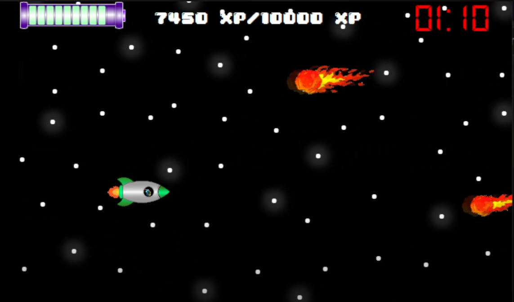
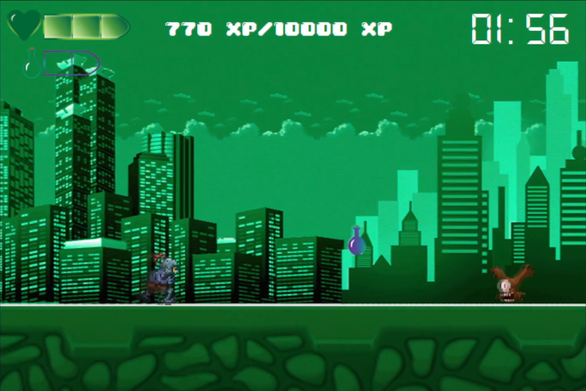
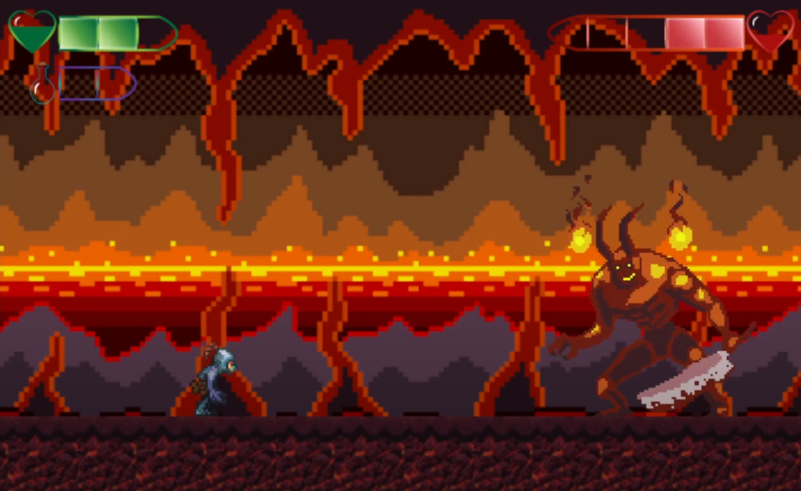
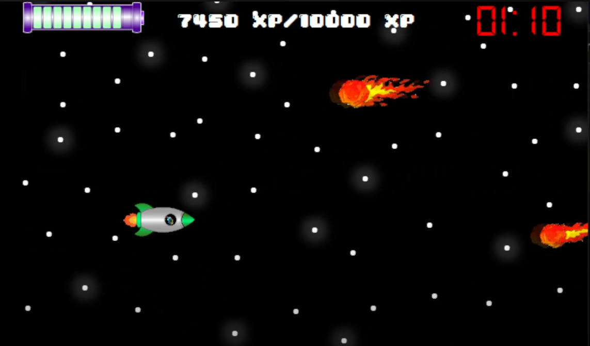
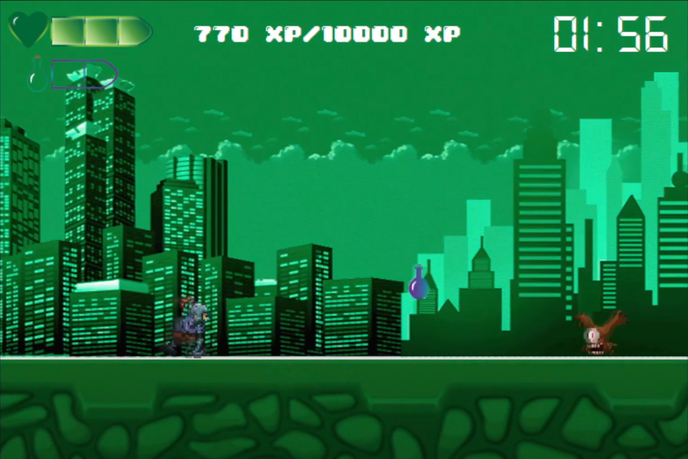
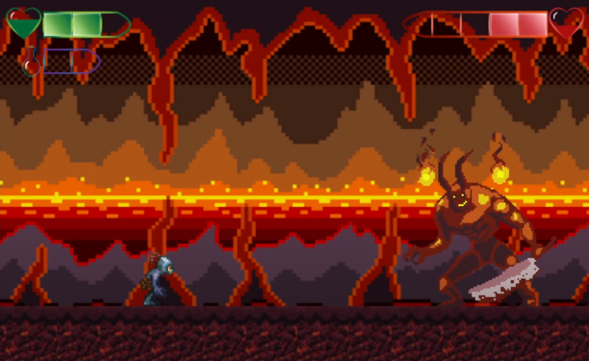

¡Hola! Soy Ismael Franco Velasco y en esta página mostraré todos los proyectos que he realizado hasta día de hoy, tanto videojuegos como aplicaciones multiplataforma/web.
Más sobre mí en:
Última modificación: 10/02/2023

Juego 2D en desarrollo. Práctica para aprender a manejar el motor gráfico, aunque yo ya apredí a manjear Unity de manera autosuficiente. El juego es una parodia a Indiana Jones. Ismael necesita dinero para comprarse la Switch, por lo que se dispone a buscar un tesoro que le permitiría comprarsela. En el transcurso, Isma deberá evitar las trampas que puedan haber y tratar de no morir por los enemigos.


Se tenía que crear una buena interfaz con JavaFX. La temática era libre por lo que mi compañero de equipo Sergio y yo tomamos como refencia la página de HBO Max e hicimos HBO Menox. Después de esto, además de tener futuro en el desarrollo de aplicaciones, también lo tenemos en el circo.

Tuvimos varias reuniones con los clientes y nos pidieron una mini aplicación para apadrinar pingüinos. La aplicación debía tener conexión con base de datos (MySQL).

Se pedía desarrollar una aplicación móvil que utilizase una base de datos local SQLite y cumpliese el CRUD con Android Studio. Decidí crear mi propio reproductor de música, en el que puedo añadir cualquier canción poniendo el nombre y la URL. Ahora disfruto escuchando música sin ser interrumpido por anuncios.
Videojuego 2D desarrollado con Java. Fue la primera práctica en la que debiamos usar interfaz gráfica y se pedía un juego de mesa fácil y sencillo, pero mi compañero y yo decidimos investigar más para poder conseguir un 2D, conociendo los hilos, los eventos y los listeners. Con Abe's Inferno, Daniel Boza García y yo fuimos los ganadores del concurso de los SorayaGames (Soraya es mi profesora).
 




